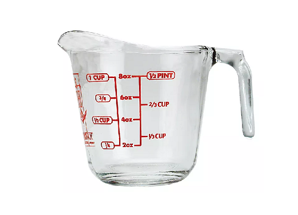

This recipe serves 3-4.
- 1⁄2 cup of 5-Minute Grits
- 1⁄2 cup of heavy cream
- 1⁄2 cup of half n half
- 11⁄2 cup of water
- 2 tablespoons of butter
- Salt (to taste)
- Pepper (to taste)
- Mild cheddar cheese (as much as you'd like)
- Mozzarella cheese (as much as you'd like)
This recipe was inspired by: Divas Can Cook.
